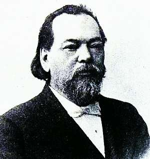

Борис Акунин
Мой календарь
Вчера у нас был День Защиты, а сегодня День Защитника.
25 апреля 1842 года родился легендарный российский адвокат Федор Никифорович Плевако.
Его звезда сияла в те полвека (1864–1917), когда в России после реформы существовал нормальный состязательный судебный процесс, и защитник мог запросто положить на обе лопатки государственного обвинителя. Что Плевако неоднократно и делал.
Федор Никифорович любил сделать из своего выступления шоу. Публика ходила на них, как в театр. Длинных речей Плевако обычно не произносил. Вот два образчика его методики.
Судили старушку, попавшуюся на мелкой краже. Прокурор сказал, что дело не в сумме, а в том, что неуважение к собственности гибельно для государства. «Много бед, много испытаний пришлось претерпеть России за ее больше чем тысячелетнее существование. Печенеги терзали ее, половцы, татары, поляки. Двунадесять языков взяли Москву. Все вытерпела, все преодолела Россия. Но теперь старушка украла жестяной чайник ценою в 30 копеек. Этого Россия уж, конечно, не выдержит, от этого она погибнет». Оправдали.
В другой раз наглая проститутка обвинила простофилю крестьянина, что он ее изнасиловал, и потребовала денежную компенсацию. «Хорошо, - сказал адвокат, - но вы должны будете оплатить счет из прачечной за простыню, которую вы испачкали своими туфлями». «Брешете! - крикнула пострадавшая. - Туфли я завсегда сымаю!».
Бедных Федор Никифорович защищал бесплатно, а иногда еще и помогал им деньгами. Он вообще был чудаковат. Например, назвал двух сыновей одним и тем же именем «Сергей», очень уж оно ему нравилось. Детки выросли, оба стали адвокатами и не сказали папе спасибо, потому что их вечно путали.
Умер Плевако очень вовремя - за несколько лет до революции и упразднения независимых судов.
Дай вам бог хороших защитников, когда вы будете нуждаться в защите. А еще лучше будьте защитниками сами.